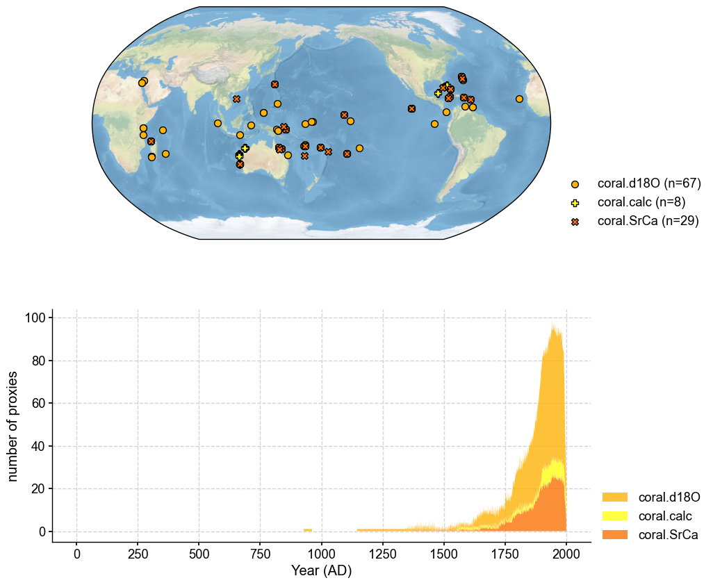
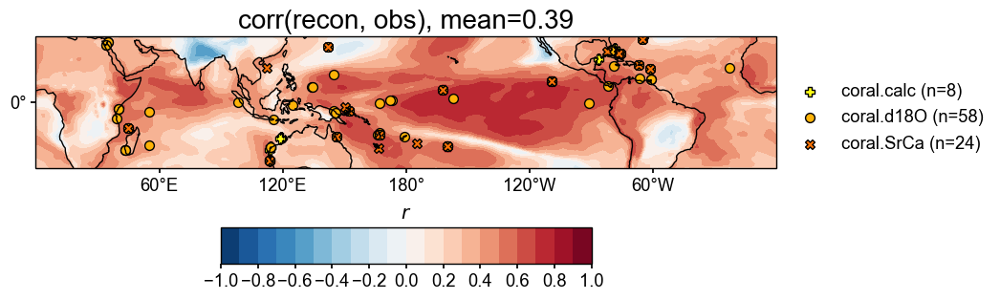

Reconstructing the tropical Pacific SST with PAGES2k#
[1]:
%load_ext autoreload
%autoreload 2
import cfr
print(cfr.__version__)
0.6.3
Load the PAGES2k database#
[2]:
job = cfr.ReconJob()
job.load_proxydb('PAGES2kv2')
Filter the database#
We only need the corals in this example.
[3]:
job.filter_proxydb(by='ptype', keys=['coral'])
fig, ax = job.proxydb.plot(plot_count=True)

Annualize the database#
[4]:
job.annualize_proxydb(months=[12, 1, 2], ptypes=['coral'])
Annualizing ProxyDatabase: 100%|██████████| 104/104 [00:02<00:00, 43.16it/s]
Load the gridded climate data#
Load the model prior#
[5]:
job.load_clim(
tag='prior',
path_dict={
'tas': 'iCESM_past1000historical/tas',
},
anom_period=(1951, 1980),
)
>>> The target file seems existed at: ./data/tas_sfc_Amon_iCESM_past1000historical_085001-200512.nc . Loading from it instead of downloading ...
Load the instrumental observations#
[6]:
job.load_clim(
tag='obs',
path_dict={
'tas': 'gistemp1200_GHCNv4_ERSSTv5',
},
rename_dict={'tas': 'tempanomaly'},
anom_period=(1951, 1980),
)
>>> The target file seems existed at: ./data/gistemp1200_GHCNv4_ERSSTv5.nc.gz . Loading from it instead of downloading ...
Proxy system modeling#
Calibrating the proxy system models#
[7]:
ptype_psm_dict = {
'coral.d18O': 'Linear',
'coral.calc': 'Linear',
'coral.SrCa': 'Linear',
}
ptype_season_dict = {
'coral.d18O': [12, 1, 2],
'coral.calc': [12, 1, 2],
'coral.SrCa': [12, 1, 2],
}
job.calib_psms(
ptype_psm_dict=ptype_psm_dict,
ptype_season_dict=ptype_season_dict,
calib_period=(1850, 2015),
verbose=True,
)
>>> job.configs["ptype_psm_dict"] = {'coral.d18O': 'Linear', 'coral.SrCa': 'Linear', 'coral.calc': 'Linear'}
>>> job.configs["ptype_season_dict"] = {'coral.d18O': [12, 1, 2], 'coral.SrCa': [12, 1, 2], 'coral.calc': [12, 1, 2]}
>>> job.configs["psm_calib_period"] = (1850, 2015)
Calibrating the PSMs: 15%|█▌ | 15/99 [00:00<00:01, 44.96it/s]
The number of overlapped data points is 14 < 25. Skipping ...
The number of overlapped data points is 20 < 25. Skipping ...
The number of overlapped data points is 22 < 25. Skipping ...
Calibrating the PSMs: 30%|███ | 30/99 [00:00<00:01, 44.78it/s]
The number of overlapped data points is 9 < 25. Skipping ...
The number of overlapped data points is 24 < 25. Skipping ...
Calibrating the PSMs: 56%|█████▌ | 55/99 [00:01<00:00, 45.11it/s]
The number of overlapped data points is 22 < 25. Skipping ...
The number of overlapped data points is 22 < 25. Skipping ...
The number of overlapped data points is 0 < 25. Skipping ...
Calibrating the PSMs: 81%|████████ | 80/99 [00:01<00:00, 45.56it/s]
The number of overlapped data points is 21 < 25. Skipping ...
Calibrating the PSMs: 100%|██████████| 99/99 [00:02<00:00, 44.85it/s]
>>> PSM for Ocn_144 failed to be calibrated.
>>> PSM for Ocn_149 failed to be calibrated.
>>> PSM for Ocn_150 failed to be calibrated.
>>> PSM for Ocn_145 failed to be calibrated.
>>> PSM for Ocn_152 failed to be calibrated.
>>> PSM for Ocn_164 failed to be calibrated.
>>> PSM for Ocn_165 failed to be calibrated.
>>> PSM for Ocn_138 failed to be calibrated.
>>> PSM for Ocn_183 failed to be calibrated.
>>> 90 records tagged "calibrated" with ProxyRecord.psm created
Forwarding the proxy system models#
[8]:
job.forward_psms()
Forwarding the PSMs: 100%|██████████| 90/90 [00:12<00:00, 7.39it/s]
Annualizing, regridding, and cropping the prior field#
[9]:
job.annualize_clim(tag='prior', months=[12, 1, 2], verbose=True)
job.regrid_clim(tag='prior', nlat=42, nlon=63, verbose=True)
job.crop_clim(tag='prior', lat_min=-35, lat_max=35, verbose=True)
>>> job.configs["prior_annualize_months"] = [12, 1, 2]
>>> Processing tas ...
>>> job.prior updated
>>> job.configs["prior_regrid_nlat"] = 42
>>> job.configs["prior_regrid_nlon"] = 63
>>> Processing tas ...
>>> job.configs["prior_lat_min"] = -35
>>> job.configs["prior_lat_max"] = 35
>>> job.configs["prior_lon_min"] = 0
>>> job.configs["prior_lon_max"] = 360
>>> Processing tas ...
[10]:
fig, ax = job.prior['tas'][-1].plot()

Run the DA solver#
[11]:
job.run_da_mc(
save_dirpath='./recons/lmr-real-pages2k',
recon_seeds=list(range(1, 11)),
verbose=True,
)
>>> job.configs["recon_period"] = [0, 2000]
>>> job.configs["recon_loc_rad"] = 25000
>>> job.configs["recon_timescale"] = 1
>>> job.configs["recon_vars"] = ['tas']
>>> job.configs["nens"] = 100
>>> job.configs["recon_seeds"] = [1, 2, 3, 4, 5, 6, 7, 8, 9, 10]
>>> job.configs["assim_frac"] = 0.75
>>> job.configs["save_dirpath"] = ./recons/lmr-real-pages2k
>>> job.configs["compress_params"] = {'zlib': True}
>>> job.configs["output_full_ens"] = False
>>> job.configs["recon_sampling_mode"] = fixed
>>> job.configs["trim_prior"] = True
>>> job.configs["allownan"] = False
>>> seed: 1 | max: 10
KF updating: 100%|██████████| 2001/2001 [00:09<00:00, 219.47it/s]
>>> Reconstructed fields saved to: ./recons/lmr-real-pages2k/job_r01_recon.nc
>>> seed: 2 | max: 10
KF updating: 100%|██████████| 2001/2001 [00:13<00:00, 150.66it/s]
>>> Reconstructed fields saved to: ./recons/lmr-real-pages2k/job_r02_recon.nc
>>> seed: 3 | max: 10
KF updating: 100%|██████████| 2001/2001 [00:13<00:00, 148.84it/s]
>>> Reconstructed fields saved to: ./recons/lmr-real-pages2k/job_r03_recon.nc
>>> seed: 4 | max: 10
KF updating: 100%|██████████| 2001/2001 [00:15<00:00, 127.84it/s]
>>> Reconstructed fields saved to: ./recons/lmr-real-pages2k/job_r04_recon.nc
>>> seed: 5 | max: 10
KF updating: 100%|██████████| 2001/2001 [00:18<00:00, 109.78it/s]
>>> Reconstructed fields saved to: ./recons/lmr-real-pages2k/job_r05_recon.nc
>>> seed: 6 | max: 10
KF updating: 100%|██████████| 2001/2001 [00:15<00:00, 129.27it/s]
>>> Reconstructed fields saved to: ./recons/lmr-real-pages2k/job_r06_recon.nc
>>> seed: 7 | max: 10
KF updating: 100%|██████████| 2001/2001 [00:15<00:00, 128.65it/s]
>>> Reconstructed fields saved to: ./recons/lmr-real-pages2k/job_r07_recon.nc
>>> seed: 8 | max: 10
KF updating: 100%|██████████| 2001/2001 [00:16<00:00, 124.41it/s]
>>> Reconstructed fields saved to: ./recons/lmr-real-pages2k/job_r08_recon.nc
>>> seed: 9 | max: 10
KF updating: 100%|██████████| 2001/2001 [00:12<00:00, 155.11it/s]
>>> Reconstructed fields saved to: ./recons/lmr-real-pages2k/job_r09_recon.nc
>>> seed: 10 | max: 10
KF updating: 100%|██████████| 2001/2001 [00:14<00:00, 140.50it/s]
>>> Reconstructed fields saved to: ./recons/lmr-real-pages2k/job_r10_recon.nc
>>> DONE! Total time spent: 3.28 mins.
Validate the reconstruction#
[12]:
res = cfr.ReconRes('./recons/lmr-real-pages2k')
res.load(['nino3.4', 'tas'], verbose=True)
>>> ReconRes.recons["nino3.4"] created
>>> ReconRes.da["nino3.4"] created
>>> ReconRes.recons["tas"] created
>>> ReconRes.da["tas"] created
Load the 20CRv3 as our validation target#
[13]:
target = cfr.ClimateField().fetch('20CRv3/tas', vn='air').rename('tas').get_anom((1951, 1980))
>>> The target file seems existed at: ./data/air.2m.mon.mean.nc . Loading from it instead of downloading ...
[14]:
target = target.annualize(months=[12, 1, 2]).crop(lat_min=-35, lat_max=35)
target.da
[14]:
<xarray.DataArray 'tas' (time: 181, lat: 71, lon: 360)>
array([[[-0.72366333, -0.75071716, -0.7328949 , ..., -0.7309723 ,
-0.68304443, -0.675354 ],
[-0.8072052 , -0.80418396, -0.7583313 , ..., -0.771698 ,
-0.745224 , -0.7675171 ],
[-0.7741394 , -0.765152 , -0.7289276 , ..., -0.80792236,
-0.77575684, -0.7703705 ],
...,
[-1.9167633 , -2.0245056 , -2.1382446 , ..., -1.4160156 ,
-1.6085968 , -1.7595978 ],
[-1.7813721 , -1.8453217 , -1.94104 , ..., -1.3635254 ,
-1.518753 , -1.6648407 ],
[-1.681366 , -1.8431091 , -1.9763184 , ..., -0.9181824 ,
-1.0700226 , -1.392273 ]],
[[-0.885142 , -0.8900859 , -0.90685016, ..., -0.9297587 ,
-0.871226 , -0.86743164],
[-1.0433044 , -1.0435995 , -1.0353903 , ..., -0.95008343,
-0.95111084, -1.0016378 ],
[-1.1193441 , -1.1181844 , -1.1027933 , ..., -1.0076599 ,
-1.0325216 , -1.0857443 ],
...
[-0.7697449 , -0.6768901 , -0.5923462 , ..., -0.56062824,
-0.68392944, -0.78031415],
[-0.87024945, -0.837382 , -0.76048785, ..., -0.61620075,
-0.72455853, -0.82958984],
[-0.6300557 , -0.6863912 , -0.7022502 , ..., -0.12608846,
-0.24433391, -0.4693502 ]],
[[ 1.1114197 , 1.1156616 , 1.1440125 , ..., 1.1346741 ,
1.0916748 , 1.070221 ],
[ 0.9642334 , 1.019104 , 1.1342773 , ..., 1.1085205 ,
1.0567322 , 0.9859314 ],
[ 0.92681885, 0.9468384 , 0.9932251 , ..., 1.0208435 ,
1.0012512 , 0.94000244],
...,
[ 1.573761 , 1.3674316 , 1.1996155 , ..., 2.4711304 ,
2.2483215 , 1.8666077 ],
[ 2.556244 , 2.3460693 , 2.0101624 , ..., 3.1957703 ,
3.0577087 , 2.749237 ],
[ 3.0726013 , 2.9905396 , 2.7269592 , ..., 2.7269897 ,
2.9135742 , 3.011139 ]]], dtype=float32)
Coordinates:
* lat (lat) float32 -35.0 -34.0 -33.0 -32.0 -31.0 ... 32.0 33.0 34.0 35.0
* lon (lon) float32 0.0 1.0 2.0 3.0 4.0 ... 355.0 356.0 357.0 358.0 359.0
* time (time) int64 1836 1837 1838 1839 1840 ... 2012 2013 2014 2015 2016
Attributes:
annualized: 1Field validation#
[15]:
# validate the prior against 20CR
stat = 'corr'
valid_fd = job.prior['tas'].compare(
target, stat=stat,
timespan=(1874, 2000),
)
fig, ax = valid_fd.plot(
title=f'{stat}(prior, obs), mean={valid_fd.geo_mean().value[0,0]:.2f}',
projection='PlateCarree',
latlon_range=(-32, 32, 0, 360),
plot_cbar=False,
)
cfr.showfig(fig)
cfr.savefig(fig, f'./figs/pda_{stat}_prior_obs.pdf')
/Users/fengzhu/Apps/miniconda3/envs/cfr-env/lib/python3.9/site-packages/numpy/lib/nanfunctions.py:1878: RuntimeWarning: Degrees of freedom <= 0 for slice.
var = nanvar(a, axis=axis, dtype=dtype, out=out, ddof=ddof,
/Users/fengzhu/Apps/miniconda3/envs/cfr-env/lib/python3.9/site-packages/numpy/lib/nanfunctions.py:1878: RuntimeWarning: Degrees of freedom <= 0 for slice.
var = nanvar(a, axis=axis, dtype=dtype, out=out, ddof=ddof,

Figure saved at: "figs/pda_corr_prior_obs.pdf"
[16]:
# validate the reconstruction against 20CR
valid_fd = res.recons['tas'].compare(
target, stat=stat,
timespan=(1874, 2000),
)
valid_fd.plot_kwargs.update({'cbar_orientation': 'horizontal', 'cbar_pad': 0.1})
fig, ax = valid_fd.plot(
title=f'{stat}(recon, obs), mean={valid_fd.geo_mean().value[0,0]:.2f}',
projection='PlateCarree',
latlon_range=(-32, 32, 0, 360),
plot_cbar=True,
plot_proxydb=True, proxydb=job.proxydb.filter(by='tag', keys=['calibrated']),
proxydb_lgd_kws={'loc': 'lower left', 'bbox_to_anchor': (1, 0)},
)
cfr.showfig(fig)
cfr.savefig(fig, f'./figs/pda_{stat}_recon_obs.pdf')
/Users/fengzhu/Apps/miniconda3/envs/cfr-env/lib/python3.9/site-packages/numpy/lib/nanfunctions.py:1878: RuntimeWarning: Degrees of freedom <= 0 for slice.
var = nanvar(a, axis=axis, dtype=dtype, out=out, ddof=ddof,
/Users/fengzhu/Apps/miniconda3/envs/cfr-env/lib/python3.9/site-packages/numpy/lib/nanfunctions.py:1878: RuntimeWarning: Degrees of freedom <= 0 for slice.
var = nanvar(a, axis=axis, dtype=dtype, out=out, ddof=ddof,

Figure saved at: "figs/pda_corr_recon_obs.pdf"
Timeseries validation#
[17]:
bc09 = cfr.EnsTS().fetch('BC09_NINO34')
bc09_ann = bc09.annualize(months=[12, 1, 2])
[18]:
fig, ax = res.recons['nino3.4'].compare(bc09_ann, timespan=(1874, 2000)).plot_qs()
ax.set_xlim(1600, 2000)
ax.set_ylabel('NINO3.4 [K]')
cfr.showfig(fig)
cfr.savefig(fig, f'./figs/pda_corr_recon_BC09.pdf')

Figure saved at: "figs/pda_corr_recon_BC09.pdf"